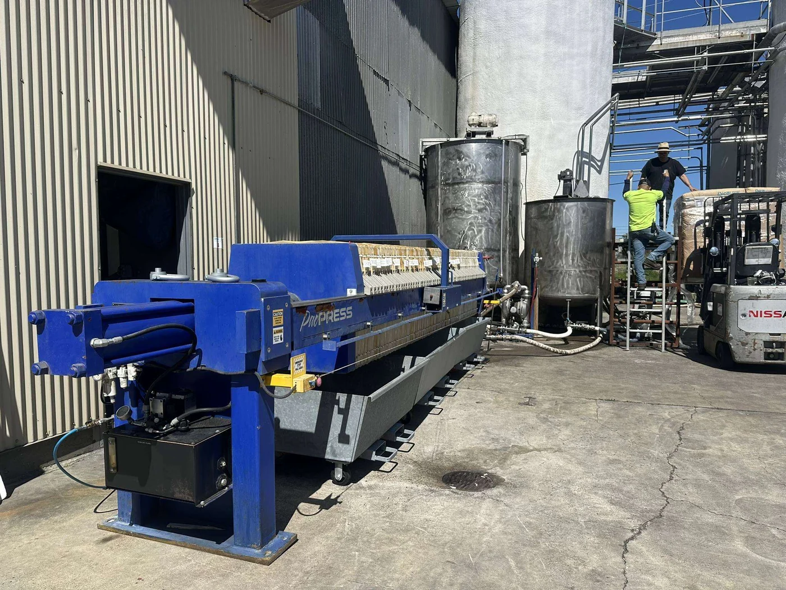

Seasonal Grape-Juice Filtration at a California Winery
A one-season rental trial let the winery compare a filter press with a decanter centrifuge under real grape-crush conditions before committing to permanent equipment.

The Seasonal Capacity Question
A winery in Lodi needed additional grape-juice filtration capacity during its annual crushing season. Rather than selecting equipment from laboratory data alone, the team trialed a decanter centrifuge alongside a PacPress rental filter press for one production season.
How the Rental Press Was Operated
The 800 mm, 30 cu.ft. press used filter aid to precoat the filter cloths. A smaller amount of filter aid was added to the juice feed as bodyfeed. The incoming juice contained approximately 2% spinnable solids. The press filtered about 11,500 gallons before the retained solids needed to be discharged.
Why the Winery Chose a Filter Press
The filtration cycle took just over three hours, followed by roughly 40 minutes to clean the press and wash the cloths. During the side-by-side evaluation, the winery found that the filter press retained solids far more effectively than the decanter. A decanter installation would have required a second filtration step to capture entrained solids, increasing the total system cost.
From Rental Trial to Permanent Equipment
After the seasonal trial, the winery purchased a permanent filter press with approximately three times the capacity of the rental unit. The operating data from the rental gave the team a practical basis for scaling the permanent system.
Need seasonal filtration capacity?
A rental trial can generate operating data before you commit to permanent equipment.